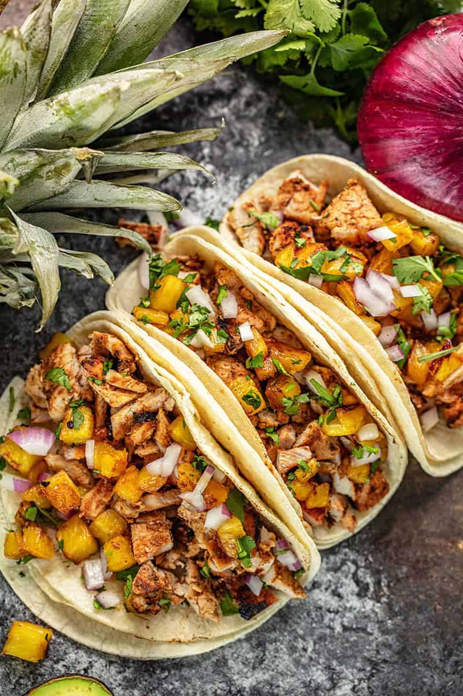

Authentic Al Pastor Taco

What are Al Pastor Tacos?
Tacos al pastor is a wonderful Mexican dish that uses the beautiful
pineapples that are grown all over Mexico.
While traditional preparations
require cooking over a spit, this recipe has been adapted for the home
cook to enjoy using a stovetop.
You can also make this on an outdoor
grill if you have access to one.
Ingredients
- 1(2-3lb) Boneless pork butt or loin
- 1 white onion roughly chopped
- 1 large pineapple peeled and cored
- 1/2 cup oj
- 2 tbls distilled white vinegar
- 2 tbls ancho chili powder
- 4 cloves minced garlic
- 1 chipotle in adobo pepper
- 1 1/2 tsps salt
- 1 tsps dried Mexican oregrano
Instructions
- Slice porck in thin slices, place in large mixing bowl
- Cut the pineapple into 2in spears.
Dice apporximately 1 cup of pineapples, enjoy the rest for a snack!
- add onion into blender with 1 cup of pineapples.
Add in OJ, white vinegar, chipotle, chile powder, garlic, salt and oregrano
Puree until smooth
- Pour marinade over pork, refigerate for at least 4 hours
- Heat a skillet or grill to high heat. Working in small batches
sear each side of pork until cooked through, 2-4 minutes.
At the same time grill pineapple until lightly charred. Then rough chop pork and pineapple
- Serve meat up hot on a warmed tortilla topped with fresh cilantro,
diced grilled pineapple slice red onion and a lime wedge